Chapter Overview
This chapter presents Buddhism as a disciplined path of awakening shaped by the Buddha's life, the Middle Way, the Four Noble Truths, the Eightfold Path, meditation, compassion, and the search for liberation from suffering.
The goal is to understand how the chapter's major ideas connect. Buddhism is best studied as a lived tradition where ethical conduct, mindfulness, wisdom, symbols, community, and global adaptation all work together rather than appearing as isolated ideas.
Learning Outcomes
- Explain how Buddhism frames human life as a path of awakening rather than a search for status or comfort.
- Describe Siddhartha Gautama's journey and explain why the Middle Way rejects both indulgence and harsh self-denial.
- Summarize the Four Noble Truths and connect them to the Buddhist analysis of suffering and its causes.
- Identify the parts of the Eightfold Path and explain how wisdom, ethics, and mental discipline work together.
- Explain samsara, karma, and nirvana using accurate Buddhist vocabulary and clear distinctions.
- Describe how meditation, mindfulness, and compassion shape Buddhist practice and ethical life.
- Explain the role of the Three Jewels, the Sangha, and major traditions such as Theravada and Mahayana.
- Use respectful, reliable sources to research a Buddhist symbol, artwork, community, or practice and produce a simple bibliography.
Chapter Sections
- The Path of Awakening
- Siddhartha Gautama and the Middle Way
- The Four Noble Truths: The Core Diagnosis
- The Eightfold Path: A Practical Guide for Right Living
- Samsara and Karma: The Mechanics of Existence
- Nirvana: Breaking the Cycle
- Meditation and Mindfulness: Training the Mind
- Compassion as the Ethical Core
- The Three Jewels and the Sangha
- Theravada and Mahayana: Two Major Traditions
- The Visual Language of Buddhism
- A Living, Adaptable Global Tradition
- The Unified Path to Liberation
- Researching Buddhist Symbols, Artworks, Communities, and Practices Respectfully
- Chapter 5 Glossary
Chapter 5 Core Ideas
| Idea | Meaning |
|---|---|
| Awakening | Buddhism is centred on awakening: seeing reality clearly and reducing suffering through disciplined practice. |
| Middle Way | The Buddha's path rejects both indulgence and self-punishment in favour of balance, discipline, and insight. |
| Four Noble Truths | Buddhism begins with a diagnosis of suffering, identifies its causes, teaches that liberation is possible, and provides a path. |
| Eightfold Path | Right understanding, intention, speech, action, livelihood, effort, mindfulness, and concentration train the whole person. |
| Samsara and karma | Intentional action shapes moral consequence within the cycle of rebirth and keeps beings bound to suffering or moves them toward freedom. |
| Nirvana | Liberation is freedom from craving, ignorance, and the mental fires that sustain suffering. |
| Mindfulness and compassion | Meditation trains attention and insight, while compassion turns wisdom into ethical care for others. |
| Community and diversity | The Buddha, Dharma, Sangha, symbols, and major traditions show how Buddhism remains unified while taking many cultural forms. |
1. The Path of Awakening
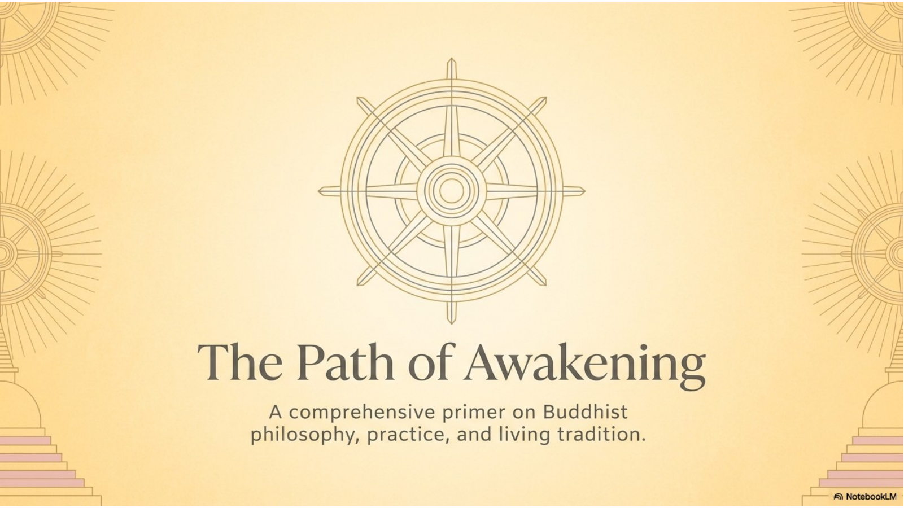
Buddhism is a religious and philosophical tradition centred on awakening: learning to see reality clearly, reduce suffering, and live with wisdom and compassion. It began in ancient India with Siddhartha Gautama, who became known as the Buddha, meaning "the awakened one." Buddhism does not begin with a creator-god doctrine. It begins with a practical human problem: people suffer, people cling to things that change, and people need a disciplined path for becoming free from that cycle.
The Buddhist path is not only a list of beliefs. It is a way of living. Buddhist traditions emphasize ethical action, meditation, mindfulness, wisdom, compassion, community, and steady practice. For many Buddhists, the purpose of religious life is not simply to belong to a group or accept a label, but to transform how a person understands themselves, treats others, and responds to suffering.
Buddhism has become a global tradition because its core teachings can be carried into many languages, cultures, and communities. As it spread across Asia and eventually to places such as Canada, Buddhists developed many forms of art, temple life, meditation practice, community organization, and ritual expression. The forms vary, but the central concern remains the same: how human beings can move from ignorance, craving, and suffering toward insight, compassion, and liberation.
2. Siddhartha Gautama and the Middle Way
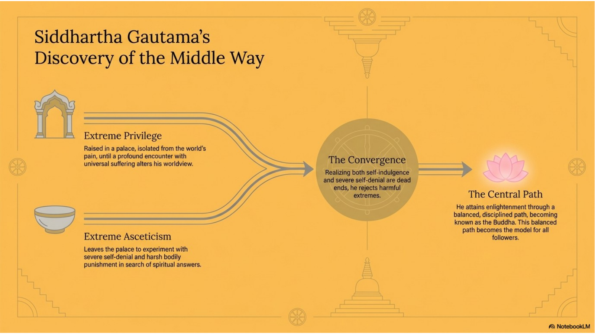
Siddhartha Gautama is the historical figure who became the Buddha. Traditional accounts describe him as a prince or nobleman who was raised in comfort and protected from the painful realities of life. His world changed when he encountered old age, sickness, death, and a spiritual seeker. These encounters are often called the Four Sights. They forced Siddhartha to face a question that ordinary comfort could not answer: if aging, illness, loss, and death affect everyone, what kind of life is truly meaningful?
Siddhartha left palace life and became a renunciant, someone who gives up ordinary attachments in search of spiritual truth. He studied with teachers and practised severe asceticism, a form of extreme self-denial. According to Buddhist tradition, he eventually realized that neither luxury nor self-punishment led to awakening. Pleasure-seeking kept the mind attached; harsh self-denial weakened the body and could become another form of spiritual pride.
This realization became the Middle Way. The Middle Way rejects harmful extremes and points toward a balanced, disciplined path. Siddhartha then meditated deeply, traditionally beneath the Bodhi tree, and attained enlightenment. From that point onward he was known as the Buddha. His life matters to Buddhists because it is both the origin story of the Dharma and a model of the path: seeing suffering honestly, rejecting extremes, practising discipline, and awakening to a deeper freedom.
3. The Four Noble Truths: The Core Diagnosis
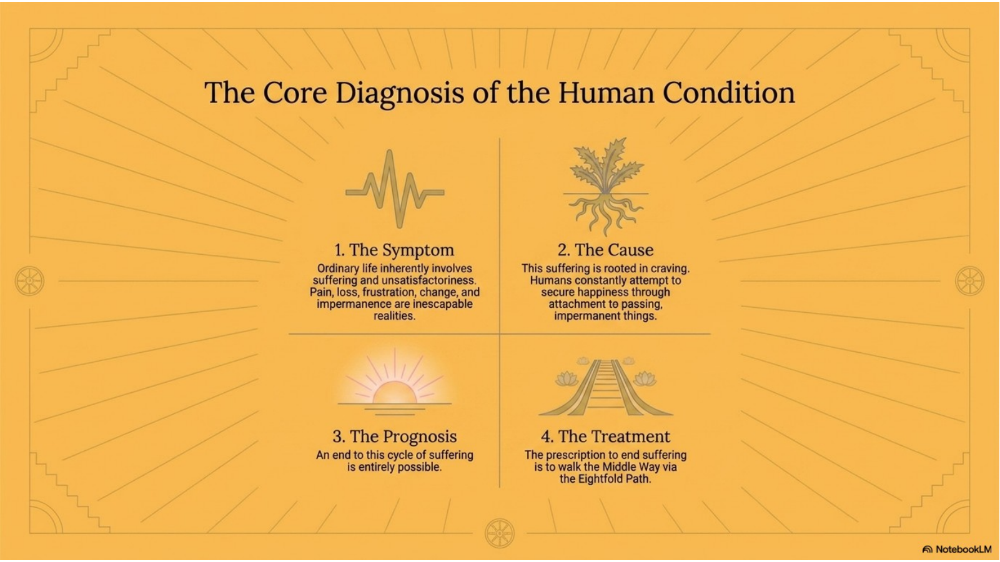
| Truth | Basic meaning | Why it matters |
|---|---|---|
| 1. Dukkha | Life involves suffering, stress, and unsatisfactoriness. | People must face the problem honestly instead of pretending comfort can solve everything. |
| 2. Cause | Suffering is caused by craving, attachment, and ignorance. | The problem has causes, so it can be understood and changed. |
| 3. Cessation | The end of suffering is possible. | Buddhism is not simply pessimistic; it teaches the possibility of liberation. |
| 4. Path | The Eightfold Path leads toward the end of suffering. | Freedom requires practice, not just belief or wishful thinking. |
The Four Noble Truths are among the most important teachings in Buddhism. They organize the Buddha's insight into suffering and its end. They are sometimes compared to a medical diagnosis: identify the problem, identify the cause, recognize that healing is possible, and follow the treatment.
The First Noble Truth teaches that ordinary life involves dukkha, often translated as suffering, unsatisfactoriness, or stress. This does not mean every moment is miserable. It means life cannot be made permanently secure through things that change. Pleasure changes, bodies age, relationships shift, success fades, and people often cling to what cannot remain fixed.
The Second Noble Truth teaches that suffering has causes, especially craving, attachment, and ignorance. Craving is not only wanting obvious pleasures. It can also mean clinging to identity, control, status, certainty, or the belief that changing things can give permanent satisfaction. The Third Noble Truth teaches that suffering can cease when craving and ignorance are uprooted. The Fourth Noble Truth gives the practical path that leads toward this freedom: the Noble Eightfold Path.
4. The Eightfold Path: A Practical Guide for Right Living
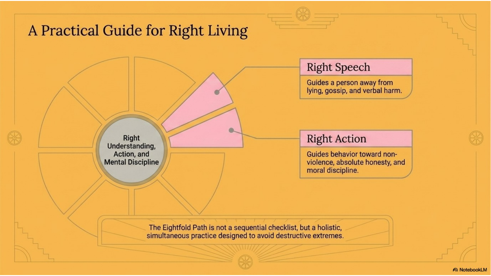
| Area of practice | Parts of the Eightfold Path | What it trains |
|---|---|---|
| Wisdom | Right Understanding; Right Intention | Seeing reality clearly and orienting the heart toward renunciation, goodwill, and non-harm. |
| Ethical conduct | Right Speech; Right Action; Right Livelihood | Speaking, behaving, and working in ways that reduce harm and support compassion. |
| Mental discipline | Right Effort; Right Mindfulness; Right Concentration | Training attention, awareness, persistence, and meditative focus. |
The Noble Eightfold Path is the Buddhist guide for right living. It is not a checklist that is completed once and forgotten. It is a way of training a person's understanding, behaviour, speech, livelihood, effort, attention, and mental discipline. The word "right" does not mean self-righteous or morally superior. It means aligned with awakening, non-harm, and freedom from craving.
The path is often grouped into three areas: wisdom, ethical conduct, and mental discipline. Wisdom involves seeing life clearly. Ethical conduct shapes how a person treats other beings. Mental discipline trains the mind so that insight and compassion become stable rather than occasional.
Right Speech and Right Action are especially useful for understanding Buddhist ethics. Right Speech guides a person away from lying, cruelty, gossip, and harmful language. Right Action guides behaviour away from violence, stealing, exploitation, and dishonesty. These practices matter because Buddhism does not separate inner awakening from outward conduct. A person's words and actions either increase suffering or help reduce it.
5. Samsara and Karma: The Mechanics of Existence
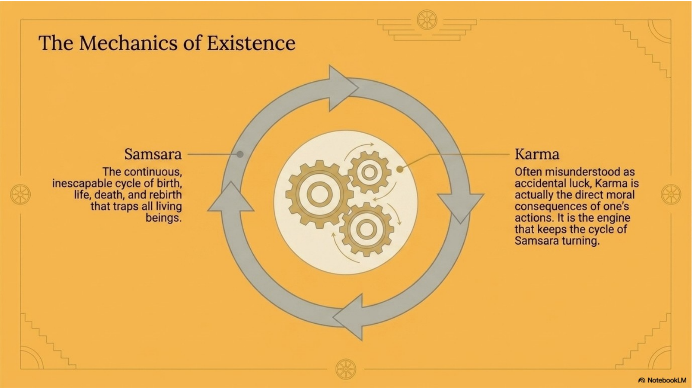
Buddhism teaches that beings are caught in samsara, the ongoing cycle of birth, death, and rebirth. Samsara is not described as a peaceful circle that should simply continue forever. It is a restless cycle shaped by ignorance, craving, and karma. As long as craving and ignorance continue, beings remain bound to patterns that produce suffering.
Karma refers to the moral consequences of intentional action. In Buddhism, karma is not random luck, instant punishment, or a simple system where every event is deserved. It is better understood as the way actions shape character, future conditions, and the direction of a life. Thoughts, words, and actions leave effects. Greed, hatred, and delusion strengthen suffering. Generosity, compassion, and wisdom weaken the patterns that keep suffering alive.
The teaching of karma places responsibility on human action. A person is not asked to wait passively for rescue. A person can train their mind, change their conduct, and participate in the conditions that lead toward freedom. This is why ethics, meditation, and wisdom are connected: they interrupt the cycle of samsara at its roots.
6. Nirvana: Breaking the Cycle
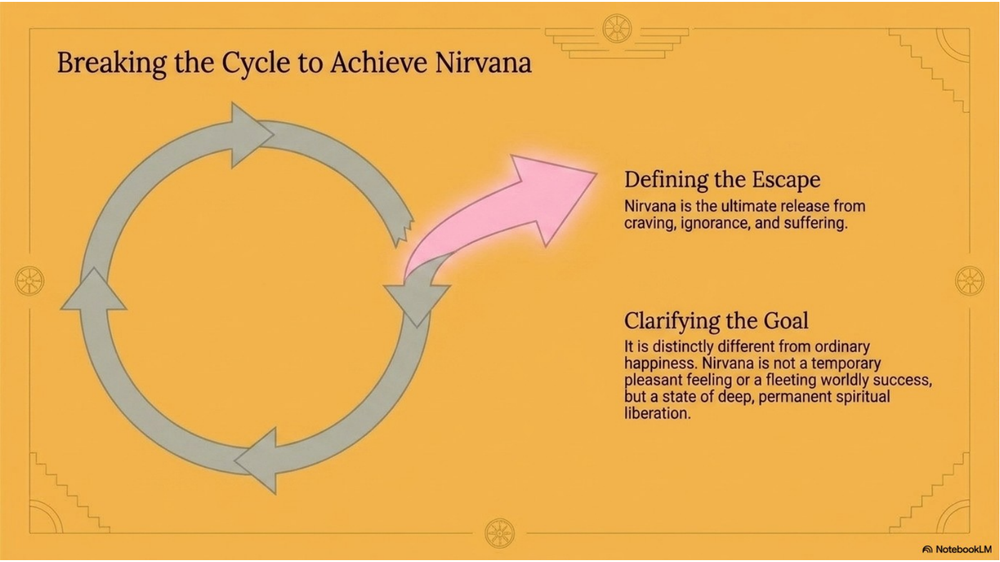
Nirvana is the Buddhist goal of liberation from craving, ignorance, and suffering. It is sometimes described as the "extinguishing" of the fires of greed, hatred, and delusion. This image does not mean nothingness or ordinary sadness. It means the ending of the burning forces that keep the mind trapped in craving and suffering.
Nirvana is different from ordinary happiness. Ordinary happiness usually depends on conditions: success, comfort, pleasure, approval, or the absence of pain. Because conditions change, ordinary happiness is unstable. Nirvana points to a deeper kind of freedom that is not built on clinging to temporary things. It is release from the mental patterns that create bondage.
Buddhist traditions explain nirvana in different ways, and not all schools describe it identically. However, the central idea is consistent: the end of suffering is possible because craving and ignorance can be transformed. Nirvana is not reached by wishing for it. It is approached through the Middle Way, the Four Noble Truths, the Eightfold Path, ethical conduct, meditation, wisdom, and compassion.
7. Meditation and Mindfulness: Training the Mind
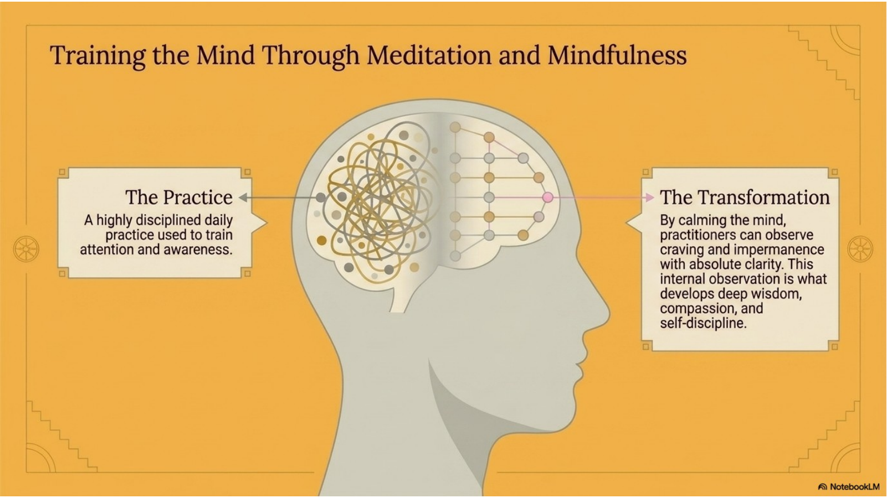
| Practice focus | What it develops | Connection to Buddhist teaching |
|---|---|---|
| Calming the mind | Stability, focus, patience | A calmer mind is less controlled by craving and reactivity. |
| Mindfulness | Awareness of thoughts, feelings, body, and actions | Awareness helps reveal impermanence and attachment. |
| Insight | Clear seeing of suffering and its causes | Insight supports wisdom and movement toward liberation. |
| Loving-kindness | Goodwill and compassion | Compassion connects personal practice with care for others. |
Meditation is a disciplined practice used to train the mind. In Buddhism, the mind is not treated as a neutral background. It is active, restless, reactive, and often pulled by craving, fear, memory, and habit. Meditation helps practitioners observe the mind more clearly instead of being controlled by every thought or emotion that arises.
Mindfulness means sustained, careful awareness of present experience. It involves noticing thoughts, feelings, sensations, and actions without immediately grasping, rejecting, or identifying with them. Mindfulness can reveal impermanence: everything arises, changes, and passes away. Seeing this clearly weakens attachment and helps a person respond with more wisdom.
Buddhist meditation can include calming practices, insight practices, and compassion-based practices such as loving-kindness meditation. These practices are not only relaxation techniques. They are part of a larger path that develops attention, ethical awareness, insight, patience, and self-discipline. Meditation supports liberation because it helps practitioners see craving and ignorance at work in real time.
8. Compassion as the Ethical Core
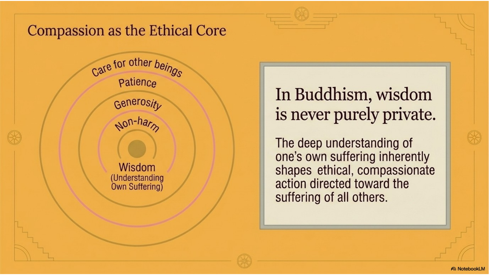
Compassion is central to Buddhist ethics because Buddhist wisdom is not meant to remain private. If a person understands suffering deeply, they should become less cruel, less selfish, and less careless with the suffering of others. Compassion means recognizing that other beings also experience fear, pain, loss, hope, and vulnerability.
Buddhist compassion is not merely feeling sorry for someone. It is an active concern for reducing suffering. It can appear through non-violence, honesty, generosity, patience, careful speech, service, and restraint. Compassion also requires wisdom: helping others well means seeing situations clearly rather than acting from ego, guilt, or superiority.
In Mahayana Buddhism, the bodhisattva ideal gives compassion a powerful form. A bodhisattva is a being committed to awakening for the benefit of others. This ideal emphasizes that liberation is not only an individual achievement. The deepest understanding of suffering should create a wider responsibility to help other beings move toward freedom.
9. The Three Jewels and the Sangha
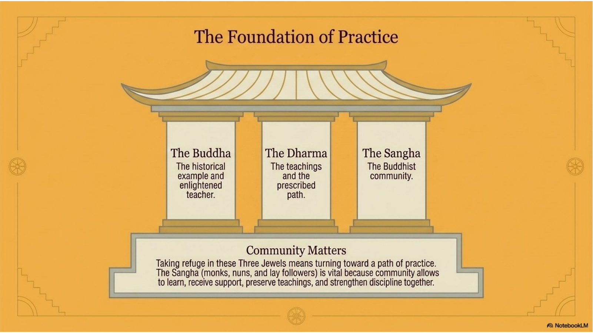
| Jewel | Meaning | Role in Buddhist life |
|---|---|---|
| Buddha | The awakened teacher and model | Shows that awakening is possible and gives the example of the path. |
| Dharma | The teachings and truth taught by the Buddha | Gives the framework for understanding suffering and practising liberation. |
| Sangha | The Buddhist community | Preserves teachings, supports practice, and strengthens discipline and compassion. |
Many Buddhists describe their commitment through the Three Jewels, also called the Three Refuges: the Buddha, the Dharma, and the Sangha. To take refuge does not simply mean joining an organization. It means turning toward a path of practice and trusting that awakening, teaching, and community can guide life.
The Buddha is the awakened teacher and model. He shows that liberation is possible. The Dharma is the teaching: the Four Noble Truths, the Eightfold Path, and the wider body of Buddhist wisdom. The Sangha is the Buddhist community. In a narrow sense, sangha can refer to monks and nuns. In a broader sense, it includes lay followers and communities that preserve, practise, and transmit the teachings.
Community matters because practice is difficult to sustain alone. The Sangha supports learning, discipline, ritual life, ethical accountability, and care across generations. Monastics may devote their lives to study and practice, while lay Buddhists may support temples, practise generosity, observe ethical precepts, meditate, attend teachings, and participate in festivals or community life.
10. Theravada and Mahayana: Two Major Traditions
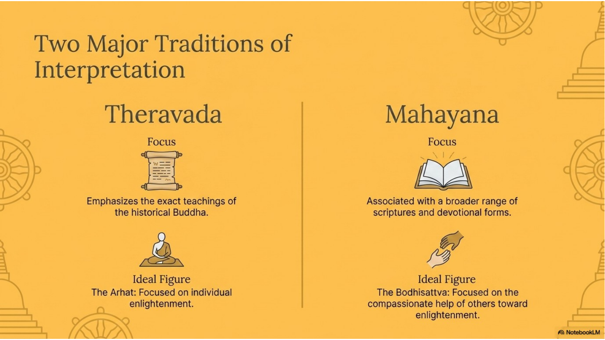
| Tradition | Common focus | Important ideal |
|---|---|---|
| Theravada | Historical Buddha's teachings, monastic discipline, early scriptures, disciplined practice | Arhat: one who reaches liberation through practice and insight. |
| Mahayana | Bodhisattva path, compassion, broader scriptures, devotional and ritual forms | Bodhisattva: one who seeks awakening for the benefit of others. |
Buddhism is not a single uniform tradition. Over time, major branches developed with different scriptures, practices, images, rituals, languages, and ideals. Two major traditions often introduced in World Religions are Theravada and Mahayana. Both are Buddhist, both honour the Buddha, and both connect practice to liberation, but they often emphasize different models of the path.
Theravada Buddhism is often associated with the teachings of the historical Buddha, monastic discipline, the Pali Canon, and the ideal of the arhat, a person who achieves liberation through deep practice and insight. It has been especially important in countries such as Sri Lanka, Thailand, Myanmar, Cambodia, and Laos.
Mahayana Buddhism is often associated with a broader range of scriptures, devotional forms, and the bodhisattva ideal. The bodhisattva ideal stresses compassion and the commitment to help all beings move toward awakening. Mahayana traditions have been especially important in places such as China, Korea, Japan, Vietnam, and Tibet, though actual Buddhist communities are more complex than any simple map.
11. The Visual Language of Buddhism
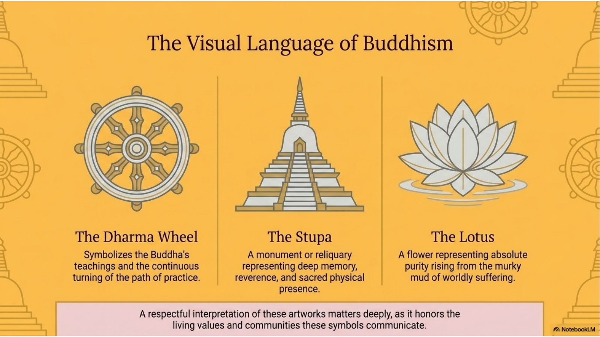
| Symbol or object | Meaning or function | Teaching connection |
|---|---|---|
| Dharma wheel | The Buddha's teaching and the turning of the Dharma | Often connected to the Eightfold Path and the movement of practice. |
| Stupa | Monument, reliquary, or sacred structure | Supports reverence, memory, pilgrimage, and sacred presence. |
| Lotus | Flower rising clean from muddy water | Represents awakening, purity, and freedom emerging from difficult conditions. |
| Mandala | Sacred diagram or visual pattern | Used for meditation, teaching, and representing spiritual order. |
| Mudra | Symbolic hand gesture | Communicates teaching, protection, meditation, fearlessness, or compassion. |
Buddhist symbols are not random decorations. They are visual ways of communicating teachings, values, and devotional meaning. Images, monuments, and ritual objects can teach about the path, support meditation, honour the Buddha, preserve memory, and create sacred space.
The Dharma wheel is one of the most recognizable Buddhist symbols. It often represents the Buddha's teaching and the turning of the wheel of Dharma. The eight spokes are commonly connected to the Noble Eightfold Path. A stupa is a Buddhist monument or reliquary. It can hold relics, mark sacred memory, and function as a focus for reverence and ritual practice. The lotus flower often symbolizes purity and awakening because it rises from muddy water while remaining unstained by it.
Other Buddhist visual forms include mandalas, which can represent the cosmos or a sacred order used in meditation; mudras, symbolic hand gestures used in images of the Buddha or bodhisattvas; and images of the Bodhi tree, which recall the Buddha's enlightenment. A respectful interpretation asks what the symbol means within Buddhist practice rather than treating it as an exotic image or decoration.
12. A Living, Adaptable Global Tradition
Buddhism spread far beyond its Indian origins. As it moved through trade routes, monastic networks, royal patronage, migration, and teaching lineages, it adapted to new languages, art styles, political settings, and local cultures. This adaptability is one reason Buddhism became a major world religion.
Adaptation does not mean the tradition lost all continuity. Core teachings such as the Four Noble Truths, the Eightfold Path, karma, compassion, meditation, and liberation remained important. At the same time, Buddhist communities expressed these teachings through local architecture, festivals, scriptures, art, ritual calendars, monastic rules, chanting styles, and community practices.
In Canada, Buddhism appears in many forms: temples founded by immigrant communities, meditation centres, monastic communities, university groups, online teachings, interfaith work, and secular mindfulness movements influenced by Buddhist practice. Canadian Buddhist communities may preserve languages and rituals from Asia while also adapting to Canadian laws, school schedules, work patterns, English-language teaching, and pluralistic society. A strong answer about Buddhism in Canada should identify a real community or practice, describe what happens there, and explain how Buddhist beliefs are expressed through that example.
13. The Unified Path to Liberation
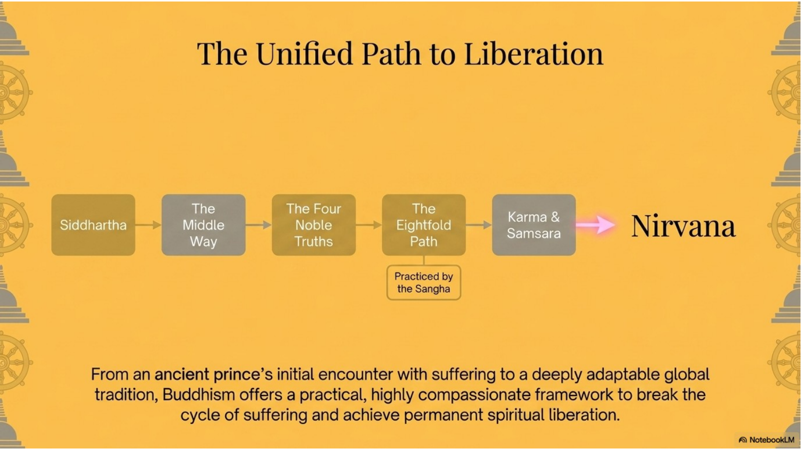
The main teachings of Buddhism fit together as a unified path. Siddhartha Gautama's life shows the problem of suffering and the discovery of the Middle Way. The Four Noble Truths explain suffering, its cause, its end, and the path. The Eightfold Path gives the practical training. Karma and samsara explain why intentional action matters and why beings remain caught in patterns of suffering. Meditation and mindfulness train the mind to see those patterns clearly. Compassion ensures that wisdom becomes ethical action rather than private escape.
The Sangha supports the path by preserving teachings and helping people practise. Symbols such as the Dharma wheel, stupa, and lotus make the teachings visible. Traditions such as Theravada and Mahayana show how Buddhism can develop diverse forms while remaining connected to central concerns: suffering, awakening, non-harm, and liberation.
A strong understanding of Buddhism does not reduce it to one term or one image. It sees the connections. The Buddha's life, the Middle Way, the Four Noble Truths, the Eightfold Path, karma, samsara, meditation, compassion, Sangha, symbols, and global adaptation all point toward one larger question: how can human beings live with less ignorance, less craving, less harm, and more freedom?
Researching Buddhist Symbols, Artworks, Communities, and Practices Respectfully
| Research task | What a strong response includes |
|---|---|
| Identify | Name the specific symbol, artwork, monument, temple, centre, festival, or community. |
| Describe | Give concrete details: appearance, location, use, community, practice, or setting. |
| Connect to belief | Explain how the example expresses Buddhist teachings, values, or practices. |
| Interpret respectfully | Use accurate language, avoid stereotypes, and recognize tradition-specific context. |
| Cite sources | Use at least two credible sources and provide a bibliography in a consistent format. |
When researching a Buddhist symbol, artwork, monument, meditation object, temple, festival, or community, accuracy and respect matter. A symbol should not be treated as a generic decoration. A temple or meditation centre should not be treated as if it represents every Buddhist everywhere. Strong research identifies the specific object, tradition, community, location, and context as clearly as possible.
For a Buddhist symbol or artwork study, begin by identifying the object exactly. For example, do not simply write "a Buddhist symbol." Name the Dharma wheel, a stupa, a lotus image, a mandala, a Buddha statue, a Bodhi tree image, prayer flags, or another specific object. Then describe what it looks like and how it is used. Finally, connect it to Buddhist teachings such as the Dharma, the Eightfold Path, compassion, impermanence, meditation, memory, reverence, or awakening.
For a Buddhist community or practice in Canada, choose a real temple, meditation centre, festival, or community. Describe what happens there: worship, meditation, chanting, teaching, offerings, festivals, monastic life, lay community support, youth programs, language preservation, or public education. Then explain which Buddhist beliefs are expressed through the practice. A meditation centre may express mindfulness and insight. A temple festival may express generosity, gratitude, Sangha, devotion, and cultural continuity.
Respectful interpretation means avoiding stereotypes and overgeneralizations. Avoid saying "all Buddhists do this" unless the claim is genuinely broad and accurate. Avoid using sacred images as props or treating religious objects only as art. A respectful response explains meaning from within the tradition and recognizes that different Buddhist communities may interpret or use similar symbols differently.
Basic Bibliography Format
A basic bibliography entry should include the author or organization, title, publisher or website, publication date when available, and the access date for web sources if your course requires it. Use one consistent format throughout the bibliography.
| Source type | Useful details to record |
|---|---|
| Book | Author, title, publisher, year of publication, and page numbers used. |
| Website | Organization or author, page title, website name, publication or update date, URL, and access date if required. |
| Museum or university page | Institution, page or object title, collection or article name, date if available, URL, and access date if required. |
| Temple or centre website | Temple or centre name, page title, location, practice or event details, URL, and access date if required. |
Common Research Mistakes to Avoid
| Mistake | Stronger approach |
|---|---|
| Writing as if all Buddhists are identical | Name the specific tradition, community, country, symbol, or practice whenever possible. |
| Describing an object without explaining its meaning | Connect visual details to teachings such as Dharma, awakening, compassion, meditation, or reverence. |
| Using image-only or unsourced webpages | Use credible sources such as official community pages, museums, universities, books, or credible encyclopedias. |
| Listing sources without using them | Let the research shape the description and explanation, then cite the sources clearly. |
Chapter 5 Glossary
These terms are the core vocabulary for this chapter. Strong answers use the terms accurately and connect them to Buddhist teachings instead of memorizing isolated definitions.
| Term | Meaning |
|---|---|
| Asceticism | Severe self-denial; the Buddha rejected it as an extreme. |
| Bodhi tree | Tree associated with the Buddha's enlightenment. |
| Bodhisattva | Mahayana ideal of seeking awakening to help others. |
| Buddha | "Awakened one"; Siddhartha after enlightenment. |
| Compassion | Active concern to reduce suffering and harm. |
| Dharma | The Buddha's teaching and path. |
| Dharma wheel | Symbol of Buddhist teaching; often linked to the Eightfold Path. |
| Dukkha | Suffering, stress, or unsatisfactoriness. |
| Eightfold Path | Path of wisdom, ethics, and mental discipline. |
| Four Noble Truths | Teachings on suffering, its cause, its end, and the path. |
| Karma | Moral consequences of intentional action. |
| Mahayana | Major tradition linked with the bodhisattva ideal. |
| Meditation | Practice for training attention, insight, and compassion. |
| Middle Way | Balanced path avoiding harmful extremes. |
| Mindfulness | Careful awareness of present experience. |
| Nirvana | Liberation from craving, ignorance, and suffering. |
| Samsara | Cycle of birth, death, and rebirth. |
| Sangha | The Buddhist community. |
| Stupa | Buddhist monument or reliquary. |
| Theravada | Major tradition linked with early scriptures and arhat ideal. |